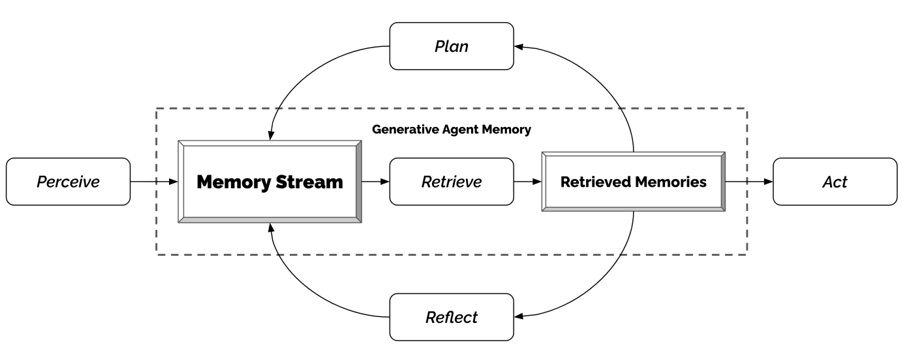
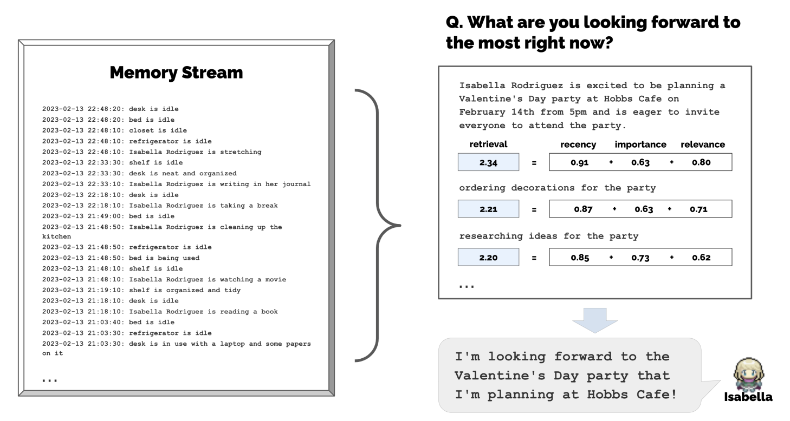
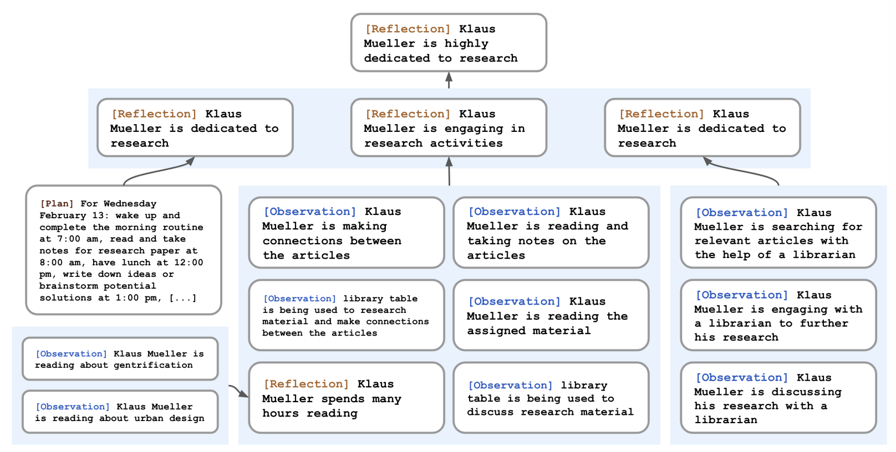

Generative agents: interactive simulacra of human behavior, Park, J. S. et al.
Table of Contents
To create generative Agents, it uses an architecture that extends a Large Language Model (LLM) to store a complete record of the Agent's experiences using natural language, summarize them over time into higher-level reflections, and retrieve them to plan behavior.
It focus on the human-AI interaction and the goal to make the AI behavior believable to humans.
1. Generative Agent Behavior and Interaction
1.1. Avatar and communication
1.1.1. A paragraph to describe their identity
An example of paragraph for a character:
> John Lin is a pharmacy shopkeeper at the Willow Market and Pharmacy who loves to help people. He is always looking for ways to make the process of getting medication easier for his customers; John Lin is living with his wife, Mei Lin, who is a college professor, and son, Eddy Lin, who is a student studying music theory; John Lin loves his family very much; John Lin has known the old couple next-door, Sam Moore and Jennifer Moore, for a few years; John Lin thinks Sam Moore is a kind and nice man; John Lin knows his neighbor, Yuriko Yamamoto, well; John Lin knows of his neighbors, Tamara Taylor and Carmen Ortiz, but has not met them before; John Lin and Tom Moreno are colleagues at The Willows Market and Pharmacy; John Lin and Tom Moreno are friends and like to discuss local politics together; John Lin knows the Moreno family somewhat well — the husband Tom Moreno and the wife Jane Moreno.
1.1.2. Inter-agent communication
- An agent action is described internally in Natural Language
In every turn of the simulated world, an agent will generate a description of their action like:
> "Isabella Rodriguez is writing in her journal", "Isabella Rodriguez is checking her emails", "Isabella Rodriguez is talking with her family on the phone", or "Isabella Rodriguez is getting ready for bed"
- Agents communicate in natural language
They might walk by or engage in conversation. Example of a conversation:
> Isabella: I’m still weighing my options, but I’ve been discussing the election with Sam Moore. What are your thoughts on him? > Tom: To be honest, I don’t like Sam Moore. I think he’s out of touch with the community and doesn’t have our best interests at heart.
1.1.3. User controls
A user can control the agents using natural language in the form of an "inner voice" and influence their behavior. E.g., saying to John:
> “You are going to run against Sam in the upcoming election”
It will make John run for it.
1.2. Environment
An action is defined by the Agent and if it implies moving, a path is calculated to go from A to B. Agents can influence the state of the objects, like occupying the bed or consuming from the fridge.
1.3. Emergent social behaviors
1.3.1. Information diffusion
Agents providing new information to others will make it spread.
1.3.2. Relationship memory
An Agent will bring back information provided in their previous interaction.
1.3.3. Coordination
A single Agent with the intent of organizing a part will end up getting help of others and getting other agents coming to its party. It shows the emergence of coordination from an order to a single agent.
2. Generative Agent Architecture
2.1. A generative architecture for a human-simulation agent
The challenge is that simulating human behavior requires reasoning over a set of experiences that is way larger than what a Large Language Model (LLM) can handle (as a Working memory). The approach is to use a memory stream to maintain a record of the agent's experience and retrieve it at the convenient time.
Agencement / agenciamento / agency architecture in terms of: Perception, Planning, Memory stream, information retrieval, Reflection, action.
Everything is recorded as natural language to enable a LLM reason on top of it.

2.1.1. Memory stream for generative agents

&park2023generative uses a database that keeps a list of the agents experiences.
Every memory has a natural language description, a creation timestamp and a timestamp of last access. It is made of observations.
The architecture implements a memory stream retrieval function that uses as input the current situation and returns a subset from the memory stream. The image shows the score from this function, the ordering of the three top memories that will be used for the agent action. These memories are added to the prompt.
- Memory stream retrieval function
The retrieval function that uses current situation as input and retrieve memories to support the agent action is based on three factors in &park2023generative: recency, importance, and relevance.
All the three scores are normalized to [0, 1] and a final weighted score is assigned for every memory using:
\[ \text{score} = \alpha_{recency} * \text{recency} + \alpha_{importance} * \text{importance} + \alpha_{relevance} * \text{relevance} \]
The authors use 1 for all the alphas.
- Recency
The more recent, the higher the score. An exponential decay function over the number of hours the simulation is running. The authors use a decay factor of 0.99.
- Importance
To distinguish mundane from core memories, e.g. eating breakfast and breaking up with a partner are very different.
The authors implement by calling a Large Language Model (LLM) and asking for an integer in a scale from 1 to 10.
> On the scale of 1 to 10, where 1 is purely mundane (e.g., brushing teeth, making bed) and 10 is extremely poignant (e.g., a break up, college acceptance), rate the likely poignancy of the following piece of memory. Memory: buying groceries at The Willows Market and Pharmacy Rating: <fill in>
The importance score is generated at the time the memory is generated.
- Relevance
A score that relates the memory to the current situation. The authors use a LLM to embed memories text to use Vector retrieval using the embedding for the query with cosine similarity.
- Recency
- Observation as the simplest element from the memory stream
An action the agent did or it has perceived from another agent. Example:
> Isabella Rodriguez and Maria Lopez are conversing about planning a Valentine’s day party at Hobbs Cafe, > The refrigerator is empty.
2.1.2. Reflection as a higher-level type of memory
The challenge on Reflection is that raw memories are hard to generate a Generalization that creates an action which is meaningful. E.g., asking an agent which person they would like to interact and they might chose the agent they have interacted the most in the past not the one they have the deeper connection or potential to meaningful interactions.
The approach from &park2023generative is introducing a second type of memory other than Memory stream for generative agents, which is observational, which they call reflection. The reflections are more abstract and high level, and generated by the agent.

They are retrieved together with other types of memory when retrieval occurs.
The authors run reflection when the sum of the importance score of the latest memories exceed a certain threshold.
The first step in reflection is to decide on what to reflect on. The authors give the 100 msot recent experiences from the agent and use a LLM to ask:
> “Given only the information above, what are 3 most salient high-level questions we can answer about the subjects in the statements?”
This will generate questions like:
> What topic is Klaus Mueller passionate about? > What is the relationship between Klaus Mueller and Maria Lopez?
The second step is to use every questions for memory retrieval (that includes gathering past reflections). Then ask the LLM to extract insights and cite the particular records used as evidence for it.
Statements about Klaus Mueller
- Klaus Mueller is writing a research paper
- Klaus Mueller enjoys reading a book on gentrification
- Klaus Mueller is conversing with Ayesha Khan about exercising […]
What 5 high-level insights can you infer from the above statements? (example format: insight (because of 1, 5, 3))
They parse it and store it as a reflection in the memory stream and link it to the other memories that were cited (see image above).
2.1.3. Planning and reacting
Planning will define a sequence of actions for the agent. They are stored in the memory stream and they are included in the retrieval process. Agents might change their plans when deciding how to behave again.
- Planning is important for agents to have consistency overtime
If you ask a LLM which action an agent should take next based on the agent background and time, it will suggest eating lunch at 12:30 pm, 1 pm, 1:30 pm. Optimizing for believability in the moment sacrifices it over time.
To overcome this challenge, plans describe a sequence of actions for the agent. A plan includes a location, starting time, and a duration.
- Top-down planning for the agent
A LLM is asked to plan a high-level agenda for the day given the agent's summary description (name, traits, and summary of recent experiences) and a summary of their previous day. The prompt:
> Name: Eddy Lin (age: 19) Innate traits: friendly, outgoing, hospitable Eddy Lin is a student at Oak Hill College studying music theory and composition. He loves to explore different musical styles and is always looking for ways to expand his knowledge. Eddy Lin is working on a composition project for his college class. He is also taking classes to learn more about music theory. Eddy Lin is excited about the new composition he is working on but he wants to dedicate more hours in the day to work on it in the coming days On Tuesday February 12, Eddy 1) woke up and completed the morning routine at 7:00 am, [. . . ]
- got ready to sleep around 10 pm.
Today is Wednesday February 13. Here is Eddy’s plan today in broad strokes: 1)
It will provide a few chunks of high-level plan. They save it to the memory and recursively decomposes it to create a finer-grained action, first into hour-long chunks of actions:
> Eddy’s plan to work on his new music composition from 1:00 pm to 5:00 pm becomes > 1:00 pm: start by brainstorming some ideas for his music composition […] 4:00 pm: take a quick break and recharge his creative energy before reviewing and polishing his composition.
Then recursively request to make 5-15 minutes chink plans:
> 4:00 pm: grab a light snack, such as a piece of fruit, a granola bar, or some nuts. 4:05 pm: take a short walk around his workspace […] 4:50 pm: take a few minutes to clean up his workspace.
- Reacting and updating plan
Agents operate in an action loop. At each time step, they perceived the world around and register it in their memory stream.
The authors prompt an LLM with these observations to decide if the agent should react or continue with the current plan. The prompt:
> [Agent’s Summary Description] It is February 13, 2023, 4:56 pm. John Lin’s status: John is back home early from work. Observation: John saw Eddy taking a short walk around his workplace. Summary of relevant context from John’s memory: Eddy Lin is John’s Lin’s son. Eddy Lin has been working on a music composition for his class. Eddy Lin likes to walk around the garden when he is thinking about or listening to music. Should John react to the observation, and if so, what would be an appropriate reaction?
The context summary is generated from two prompts that retrieve memories via:
> “What is [observer]’s relationship with the [observed entity]?”
and
> “[Observed entity] is [action status of the observed entity]”
And their answers summarized together. The output will trigger a replanning starting at the reaction time. If the action indicate an interaction between the agents, a dialogue is generated.
- Dialogue between generative agents
Agents dialogue. Dialectic. To generate the conversation, agents are conditioned on their memories about the other agent and the intention they had to start the interaction. The first line from an agent is generated by:
> [Agent’s Summary Description] It is February 13, 2023, 4:56 pm. John Lin’s status: John is back home early from work. Observation: John saw Eddy taking a short walk around his workplace. Summary of relevant context from John’s memory: Eddy Lin is John’s Lin’s son. Eddy Lin has been working on a music composition for his class. Eddy Lin likes to walk around the garden when he is thinking about or listening to music. John is asking Eddy about his music composition project. What would he say to Eddy?
The result is: “Hey Eddy, how’s the music composition project for your class coming along?”
The second Agent, Eddy, will do the same: summarize his relationship with John from his memory, as also the memories related to John's first sentence. If he decides to interact, Eddy's first saying is generated by:
> [Agent’s Summary Description] It is February 13, 2023, 4:56 pm. Eddy Lin’s status: Eddy is taking a short walk around his workplace. Observation: John is initiating a conversation with Eddy. Summary of relevant context from Eddy’s memory: Jonn Lin is Eddy Lin’s father. John Lin is caring and is interested to learn more about Eddy Lin’s school work. John Lin knows that Eddy Lin is working on a music composition. Here is the dialogue history: John: Hey Eddy, how’s the music composition project for your class coming along? How would Eddy respond to John?
The answer generated is: : “Hey Dad, it’s going well. I’ve been taking walks around the garden to clear my head and get some inspiration.”
- Dialogue between generative agents